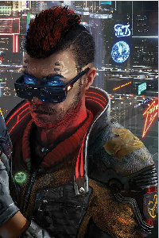

Киберпанк — поджанр научной фантастики, отражающий упадок человеческой культуры на фоне технологического прогресса в компьютерную эпоху.
Основная идея направления — тёмное будущее, в котором человечество находится в сильнейшем моральном и культурном упадке, сравниться с глубиной которого может лишь невероятный технический прогресс.
Основные элементы киберпанка: киберпространство, виртуальная реальность, искусственный интеллект, киборги, влиятельные корпорации, мафия, хакеры, киберпреступность.
